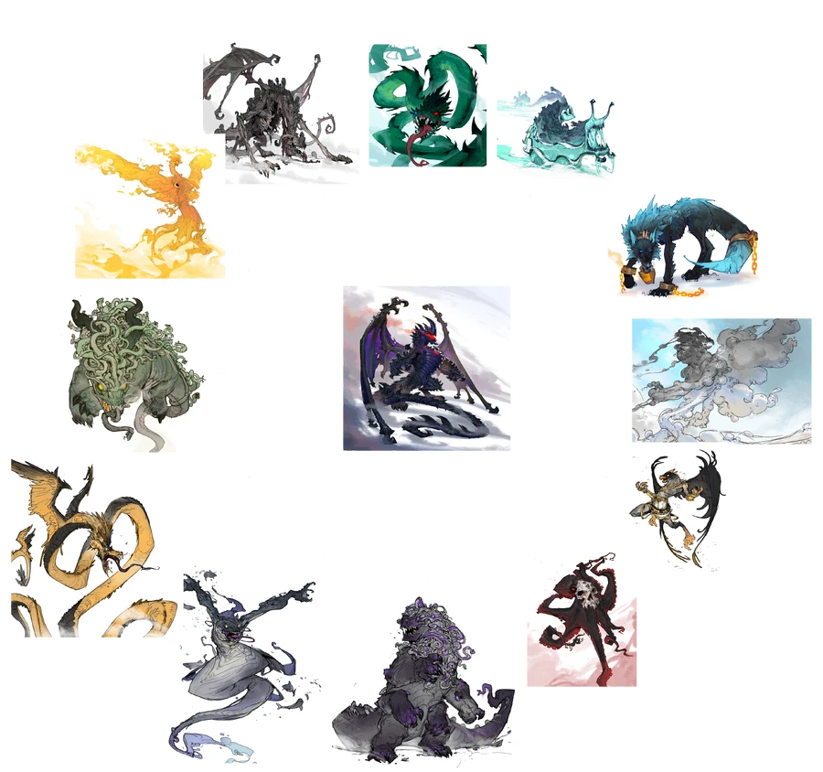

Review
A thrilling story full of adventure and twists. Each main character has a distinct personality and is wholly likeable, with traits of their respective eldrin either accompanying or balancing their arcanists' personality. Great world building and descriptions, with an awesom ending fit for the story.
Magic System
People have the ability to perform magic, but this power cannot be unlocked lest the person bonds with a mythical creature. In order to bond the person must complete that creature's trial of worth, a test which varies from creature to creature. Once completed, the creature will offer to bond. Once bonded, the creature becomes known as an eldrin and the person an arcanist.
The magic one gains is dependent on their eldrin. Every arcanist has one ability from each of the following fields:
- Evocation - when one creates something with one's magic e.g. lightning
- Manipulation - when one controls tthe elements associated with one's aldrin e.g. creating storms
- Augmentation - when one alters something with one's magic, either oneself or an object e.g. flying
- Aura - when one spreads their magic into the surrounding environment e.g. healing aura
Star shards are chunks of magic fallen from the heavens which started in the first coming of an age. Using star shards, one may imbue their magic into items to give them an associated ability. Items which used less than 10 star shards during imbuing are known as trinkets, 10 or more are known as artifacts.
A special stone known as nullstone has the ability to prevent magic being used. It may be refined and attuned to block/allow specific types of magic. From this, the Second Ascension created decay dust which has the ability to destroy any trinket it comes in contact with.
Progression
- Apprentice - started learning their magics
- Journeyman - learnt the basics of their magics but haven't yet mastered them
- Master - mastered their magics
- Grand Master - truely mastered their magics with utmost understanding, formidable opponent
Characters
- Volke Savan - the main character, is second-bonded to a knightmare when he defends a defenceless Lyell Ren in the endless swamp. He then joins the Frith Guild and goes on multiple adventures. When attacking the Second Ascension in the worl-serpent escavation site he obtains a true-form knightmare with the realisation and acceptance that he may die fighting. He escorts his brother through the world serpent lair in order to bond him but they encounter the Second Ascension. In the ensuing fight, Luthair sacrifices himself to kill a grim reaper. He then bons to the world serpent instead of his brother, despite his initial doubte. He then helps form an alliance and lead the charge against the Second Ascension. They defeat them and, with the power of the world serpent, helps create and do many useful things such as creating mountain passes and rivers and enlarging islands. Eventuall he dies to the Apoch dragon, but is then revived using Atty's true-form pheonix and re-bonds to Luthair. He fights with his sword, Retribution, which is an artifact cinstructed from the bones of the Apoch dragon and imbued with both Knightmare and World Serpent magic creating a powerful sword which can slice through and disrupt any magic with zero resistance. He additionally has a shield constructed from a world serpent scale with the ability to absorb magical attacks.
- Luthair - a knightmare, bonded first to Matis who was murdered by Gregory Ruma. He achieves a true-form under Volke. He sacrifices himself by killing a grim reaper, but is revived by the Soulforge and winds up bonding with Volke once again.
- Terrakona - the second world serpent. Gets on very well with Volke. He nurtures a wood nymph and creatures groves for them.
- Illia Savan - Volke's "sister", Illia bonds with a rizzel in the endless swamp. Hunting for mystical creatures in the swamp is Illia's idea after Volke is kicked out of the pheonix's trial of worth. She had her right eye cut out by Dread pirate Calisto as a child and harbours a reveng against him which she eventually releases.
- Nicholin - a rizzel, bonded to in the endless swamp. Nicholin has a dry sense of humour and believes himself to be the "main character".
- Gravekeeper William Savan - a non-arcanist, William is the gravekeeper on the Isle of Ruma, taking in Volke and Illia as orphans as his apprentices. He is a former officer of the navy and instills his tidiness, morals and values onto his apprentices, Volke in particular. He eventually bonds to the Scylla Waters god-creature.
- Zaxis Ren - a phoenix arcanist bonded on the Isle of Ruma, Zaxis is initially hateful of Volke as he snuck into the phoenix's trial of worth.Over time, however, they grow closer, but Zaxis remains envious of Volke's ability to master his magic. He bonds to the Fenris Wolf after his phoenix commits suicide when coming down with the arcane plague in order to save him from the consequences. Initially bonded to a phoenix names Forsythe, then bonds to Vjorn the second Fenris wolf. Has the ability
- Atty Trixiebelle - a phoenix arcanist bonded on the Isle of Ruma, Atty forms a close relationship with Volke before she withdraws into study. She was pressured into becoming an arcanist to achieve a true-form pheonix and revive her dead uncle and brother by her mother. When she finaly achieves a true-form pheonix, she turns her back on her manipulative mother and helps revive all dead god-arcanists slain by the Apoch Dragon. She is bonded to Titania.
- Adelgis Venrover - an etheral whelk arcanist, pledges fealty to Volke and operates as his co-ordinator/spy.
- Fain - a manticore arcanist, Fain was previously a member of Calisto's crew who was pittied and brought in by Volke. He looks up to Volke as a role-model and swears fealty to him.
- Hexa d'Tenni - a hydra arcanist, she is proud of her scars and keeps her arms uncovered.
- Everett Zelfree - a master arcanist of the Frith guild and master to Volke, Illia and Adelgis, eventually taking on Zaxis, Atty and Hexa. He is initially in despair due to losing his last apprentice which turns out to be the work of Gregory Ruma. Zelfree is a skilled mimic arcanist who helps guide the siz through the magical adventures.
- Liet Eventide - an atlas turtle arcanist, she is the leader of the Frith guild, for which her true-form atlas turtle carries its headquarters on its back. She becomes a trusted ally of Volke's when building his alliance.
- Evianna Velleta - previous princess Argos empire, she escapes with Volke after the Queen is assasinated by Rishan and the Second Ascension. She bonds with Layshl, the knightmare which rose from the Queen's body. She and Volke evolve from a negative relationship after he saves her from a river to being involved rontically.
- Karna - a coppelgänger arcanist with the Sun Chaser, she met Volke pretending to be a non-arcanist dancer. She accompanied him into the palace and planned to use him as a scapegoat the the rune stone robbery, but decided against it as she felt too guilty as Volke was a good man. She often made advances on Volke but he remained honourable and unsullied. She turned into a valuable ally and friend.
- Captain Delvin - a thunderbird arcanist, he is the captain of the Sun Chaser.
- Vethica - a crew member of the Sun Chaser, she lost her thunderbird eldrin to the arcane plague. She re-bonded with a khepera which gave her the ability to cure the plague, making her an extremely valuable asset.
- Jozé Blackwater - a blue phoenix arcanist, he is Volke's biological father. He is an extremely skilled blacksmith, in no way thanks to his hot blue phoenix fire, and a master in imbuiing objects. He helps create Retribution and strengthen Volke's world serpent scale shield.
Mystical Creatures

Below are listed some mystical creatures which appear in the series:
- Knightmare - a shadow knight which rises from the corpse of a murdered/assasinated ruler out for revenge. Has the ability to manipulate shadow, evoke fear, shadow-step and create an eclipe aura.
- Rizzel - a ferret-like creature with the ability of teleportation, creating teleportation flames and manipulating gravity in an area.
- Phoenix - a fire bird with the ability to summon fire and heal wounds.
- Ethereal Whelk - a sea snail made of light with the ability to read thoughts and manipulate dreams.
- Mimic - a unique creature which can take the form of any nearby mystical creature.
- Manticore - a dog-like creature with a skull mask and horns which eats human flesh. Has the ability to create ice.
- Hydra - a hydra is a massive, multi-headed beast which spits acidic venom and creatures venemous clouds of gas.
- Atlas Turtle - a turtle with the ability to create strong magical shields.
- Thunderbird - a bird-like creature able to control the winds and lightning.
- Khepera - a fist-sized scarab-like creature with incredible intelligence and the ability to heal wounds and creas by turning back time a short amount.
- Sphinx - a creature with the head of a human, the body of a lion and the wings of an eagle, sphinxs are all-seeing creatures which can divine the location of any object of person given enough time.
- Reaper - a reaper is a creature born when the blood of a thousand innocents is spilt over an acre. Reapers are creatures of death, and grow stronger through killing. Then names of the killed are etched onto an ever-growing chain to their scythe. The King's Revenge means that whoever kills a reaper will also perish.
God-creatures spawn in a pre-determined order once a new age has been triggered and whose existance are to help advance humanity into a new age of magic.
- World Serpent - a massive serpent with the ability to summon molten rock and reshape earth and rock and water.
- Soul Forge - a slug-like creature with the ability to manipulate souls.
- Fenris Wolf - a wolf which wears chains, the embodiment of winter and the death associated with it.
- Sky Titan - an incorperal bird, master of wind.
- Garuda Bird - a bird with the torso of a muscled man, a legendary creature that is the embodiment of war.
- Abyssal Kraken - a gargantuan octopus wearing a skull mask with the ability to creature massive shirlpools to sink ships.
- Typhon Beast - a hydra-like monster with 99 heads attached to the neck of a master head.
- Scylla Waters - a humanoid-fish creature made of air with the ability to create water and manipulate currents.
- Tempest Coatl - a snake with glowing scales and winds, master of stormsand lightning.
- Progenitor Behemoth - a six-legged monster with snake-like creatures covering its back, has the ability to fortify plants and destroy flesh using mists.
- Corona Phoenix - a giant phoenix made of pure flame.
- Endless Undead - an undead dragon made of human skeletons, has the ability to re-animate skeletons.
- Apoch Dragon - a black dragon. Spawned once the work of the god-creatures has been done, the apoch dragon has the soul task of hunting and killing all the god-arcanists and crectures before it dies itself. Its claws cut through magic itself.
Main Enemies
- Gregory Ruma - introduced and seen by all as a great arcanist of legend, Ruma reveales himself to be an arcane-ridden insane man who sacrifices his and Everett's apprentices in order to sustain and "cure" his dead wife.
- Dread Pirate Calisto - the pirate who took out Illia's eye, Calisto is a feared and powerful pirate. While not beaten, he is made a mockery of by Volke and co after they damage his ship and escape, taking the Occult compass and the world serpent scale. It turns out he used to be a friend of Everett's called Lynus. The Frith guild beat Calisto and take him prisoner. Calisto eventually warms up to Everatt and becomes the Typhon Beast's arcanist.
- Theasin Venrover - used his son, Adelgis', body to cultivate an Abyssal Leach, a near-extinct species, a process which nearly killed him. He is known as a great magical researcher and scientist, and is revealed to be working with the Second Ascension to develop and "improve" the arcane plague. He becomes the Soulforge arcanist and is defeated in the battle of the Argos empire.
- Rishan - king of the Argos empire after assasinating the previous Queen and killing his sister, Lyvia, in a dual to bond with the sovereign dragon. He is killed by Evianna in the world serpent lair.
- The Second Ascension - a large organisation which manufactured the arcane plague in order to bring about a new age of magic and spawn in the god-creatures. It is headed by a powerful man known as the Autarch with several god-creatures under his bealt. He and the organisation is defeated by Volke and his alliance.
Links